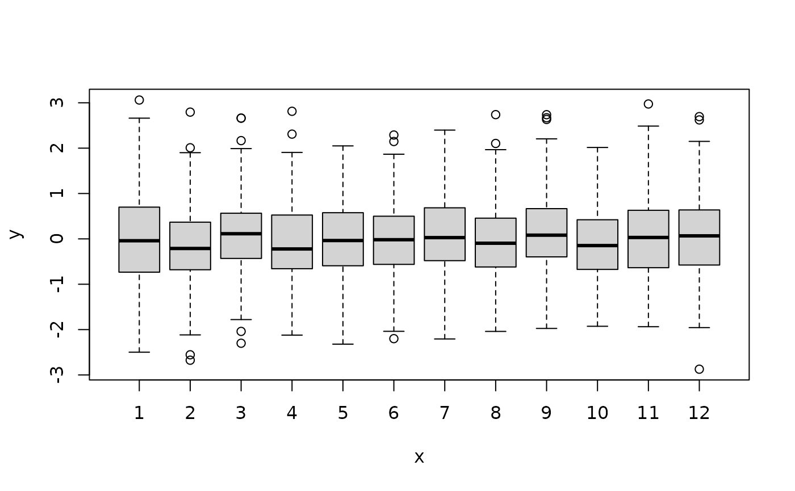
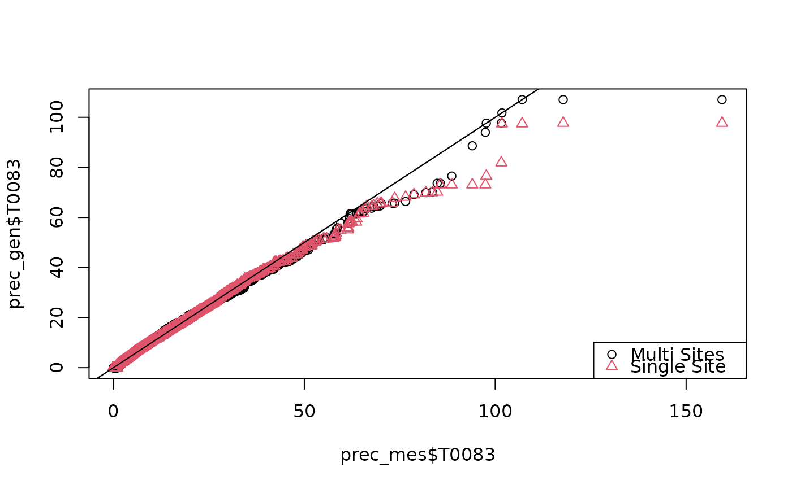
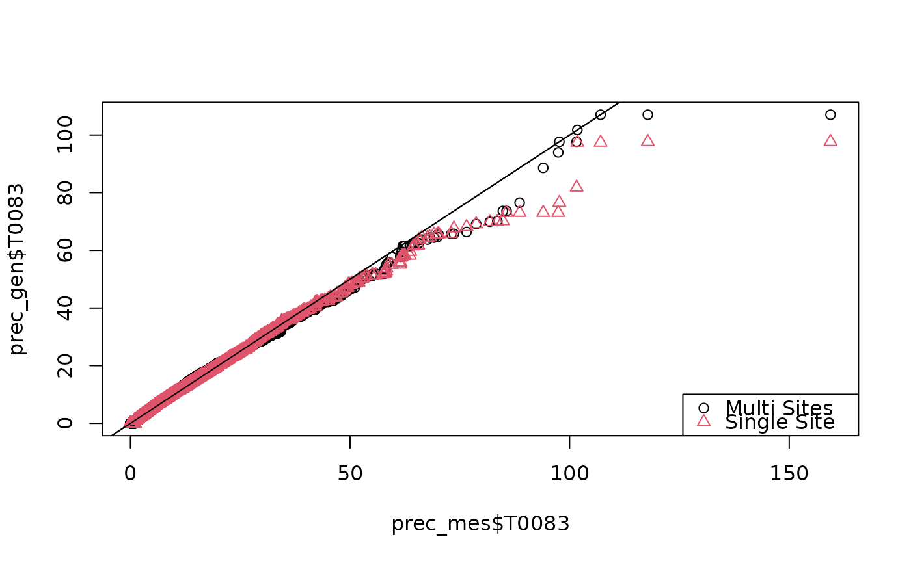

Creates a Precipitation Amount Model
Source:R/PrecipitationAmountModel.R
PrecipitationAmountModel.RdCreates a Precipitation Amount Model
PrecipitationAmountModel(
x,
valmin = 1,
station = names(x),
sample = "monthly",
origin = "1961-1-1",
...
)Arguments
- x
observed precipitation amount time series (data frame)
- valmin
maximum admitted value of precipitation depth
- station
string vector containing station identification codes
- sample
character string. If it is
"monthly"(Default), the corralaton matrix is calculeted per each month.- origin
date of the day referred by he first row of
x.- ...
further agruments for
normalizeGaussian_severalstations
Value
The function returns AN S3 OBJECT ...... the correlation matrix of precipitation amount values (excluding the zeros).
In case sample=="monthly" the runction return a MonlthyList S3 object.
Examples
# \donttest{
set.seed(1245)
data(trentino)
year_min <- 1961
year_max <- 1990
origin <- paste(year_min,1,1,sep="-")
end <- paste(year_max,12,31,sep="-")
period <- PRECIPITATION$year>=year_min & PRECIPITATION$year<=year_max
period_temp <- TEMPERATURE_MAX$year>=year_min & TEMPERATURE_MAX$year<=year_max
prec_mes <- PRECIPITATION[period,]
Tx_mes <- TEMPERATURE_MAX[period_temp,]
Tn_mes <- TEMPERATURE_MIN[period_temp,]
accepted <- array(TRUE,length(names(prec_mes)))
names(accepted) <- names(prec_mes)
for (it in names(prec_mes)) {
acc <- TRUE
acc <- (length(which(!is.na(Tx_mes[,it])))==length(Tx_mes[,it]))
acc <- (length(which(!is.na(Tn_mes[,it])))==length(Tn_mes[,it])) & acc
accepted[it] <- (length(which(!is.na(prec_mes[,it])))==length(prec_mes[,it])) & acc
}
valmin <- 1.0
prec_mes <- prec_mes[,accepted]
Tx_mes <- Tx_mes[,accepted]
Tn_mes <- Tn_mes[,accepted]
prec_occurrence_mes <- prec_mes>=valmin
station <- names(prec_mes)[!(names(prec_mes) %in% c("day","month","year"))]
precamount <- PrecipitationAmountModel(prec_mes,station=station,origin=origin)
val <- predict(precamount)
prec_gen <- generate(precamount)
month <- adddate(as.data.frame(residuals(precamount$T0090)),origin=origin)$month
#####plot(month,residuals(precamount$T0090))
plot(factor(month),residuals(precamount$T0090))

qqplot(prec_mes$T0083,prec_gen$T0083)
abline(0,1)
## SINGLE STATION
station <- "T0083"
precamount_single <- PrecipitationAmountModel(prec_mes,station=station,origin=origin)
val_single <- predict(precamount_single)
prec_gen_single <- generate(precamount_single)
month <- adddate(as.data.frame(residuals(precamount_single[[station[1]]])),origin=origin)$month
plot(factor(month),residuals(precamount_single[[station[1]]]))
 ### Comparison (Q-Q plot) between multi and single sites.
qqplot(prec_mes$T0083,prec_gen$T0083,col=1)
abline(0,1)
points(sort(prec_mes$T0083),sort(prec_gen_single$T0083),pch=2,col=2)
legend("bottomright",pch=c(1,2),col=c(1,2),legend=c("Multi Sites","Single Site"))
abline(0,1)

# }
### Comparison (Q-Q plot) between multi and single sites.
qqplot(prec_mes$T0083,prec_gen$T0083,col=1)
abline(0,1)
points(sort(prec_mes$T0083),sort(prec_gen_single$T0083),pch=2,col=2)
legend("bottomright",pch=c(1,2),col=c(1,2),legend=c("Multi Sites","Single Site"))
abline(0,1)

# }